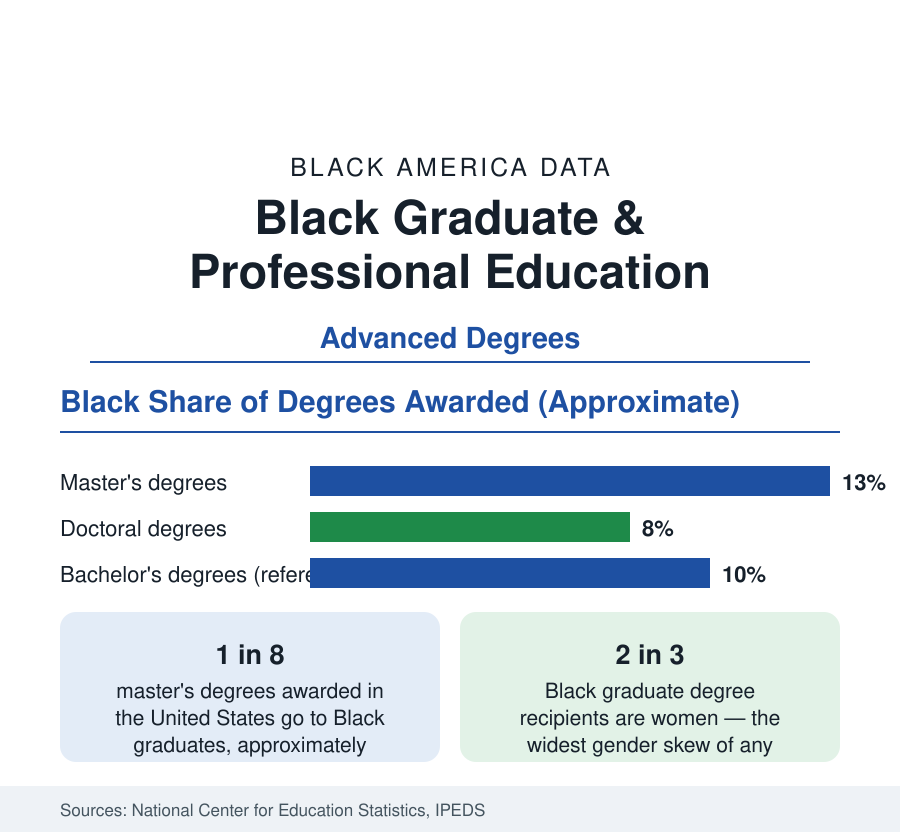

Black Education
Black Graduate and Professional Degrees: The Top of the Pipeline
Black students earn roughly one in eight master's degrees and a smaller share of doctorates — the pipeline into medicine, law, and the professoriate. The NCES data.

Above the bachelor's degree, the Black education pipeline narrows at each successive level. Black students earn on the order of one in eight master's degrees awarded in the United States, roughly one in twelve professional degrees in fields like medicine and law by most counts, and under one in ten research doctorates — the credential that staffs the professoriate and the research establishment. Black women earn about two of every three of those advanced degrees. This article reports the graduate and professional data from the federal completions counts and the professional associations.
The Master's Tier: The Workhorse Credential
The master's degree is where Black advanced education concentrates. Black graduates take their largest shares in the applied professional fields — education, business administration, public administration, social work, public health, and the health professions — the credentialing infrastructure of the public and nonprofit sectors whose employment this reference profiles. The MBA and the MEd between them account for a large fraction of Black master's completions. The for-profit sector's role, documented in the enrollment data, is significant at this level as well: Black graduate students enroll in for-profit institutions at multiples of the overall rate, with the debt data of the student-loan profile recording borrowing that at the graduate level regularly exceeds undergraduate totals — graduate PLUS loans carry no aggregate cap, and the median Black graduate borrower finishes with a combined balance in the high five figures.
Medicine, Law, and the Licensed Professions
The professional tier is the pipeline's narrowest point. Black students have formed roughly 8 to 10 percent of entering medical school classes in the most recent Association of American Medical Colleges counts — a share that rose modestly across the past decade and whose institutions matter: the four historically Black medical schools (Howard, Meharry, Morehouse, and Charles Drew) have historically produced a disproportionate share of Black physicians, and a small set of other schools accounts for most of the remainder. In law, Black students form roughly 8 percent of JD enrollment in the American Bar Association's counts, with the six HBCU law schools carrying an outsized share of Black graduates and of the public-interest bar. Dentistry, pharmacy, and veterinary medicine record similar or lower shares; engineering and computer science doctorates record the lowest — Black recipients form only a few percent of research doctorates in the physical sciences and engineering in the National Science Foundation's survey.
The Doctorate and the Professoriate
Research doctorates are the pipeline into the faculty, and the counts explain the faculty data downstream: Black scholars earn under one in ten U.S. research doctorates overall, concentrated in education (the largest field, where the share approaches a fifth) and the social sciences and humanities, thinnest in the laboratory sciences. The faculty censuses then record Black professors at roughly 4 percent of full-time faculty nationally — and a smaller share of tenured full professors — against a Black student population several times that share. The leaky-pipeline arithmetic compounds at each joint: bachelor's to graduate enrollment, enrollment to completion (doctorate completion rates and time-to-degree run longer for Black students in the Council of Graduate Schools data, against heavier debt and thinner funding packages), and doctorate to tenure-track placement.
The Gender Structure
Every level of this article's data is majority-female, more so as the level rises: Black women earn roughly two-thirds of Black master's degrees and professional degrees and a clear majority of Black doctorates — the most pronounced gender skew of any racial group in the federal counts. The professional consequences appear in the employment data (the Black professional class is disproportionately a class of women) and the interpretation debates in the literature are extensive; the reference position is the data themselves: the advanced-credential pipeline of Black America runs through its women, and any account of Black professional formation that does not start there is misreading the tables.
Reading the Graduate Data
The graduate profile completes the education section's arc from the 7.3 million K-12 students to the few thousand doctorates: at each gate the Black share narrows, and at each gate the institutions built for the purpose — the HBCU graduate and professional schools above all — carry weight far beyond their size. The master's tier shows the pipeline at its healthiest breadth; the doctoral tier shows its constraint. Both are the scoreboard for the section's stated subject: who gets credentialed to run the institutions the rest of this reference describes.
More in Black Education
Black Educational Attainment: High School Parity, the College Gap
About 89 percent of Black adults hold a high school diploma and one in four holds a bachelor's degree or higher — the attainment ladder, the college completion gap, and the generational trend.
Historically Black Colleges and Universities: Enrollment and Degrees
More than 100 HBCUs enroll roughly 290,000 students and award about one in six Black bachelor's degrees — an outsized share from a small sector. The federal education data.
Black College Enrollment: 2.4 Million Students
About 2.4 million Black students are enrolled in American colleges — nearly two-thirds of them women. The NCES enrollment data by sector, level, and trend.
Source: National Center for Education Statistics, IPEDS completions data; Association of American Medical Colleges; American Bar Association enrollment data.